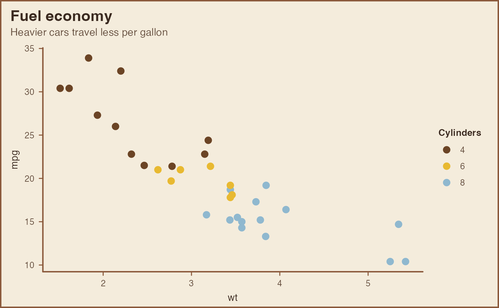
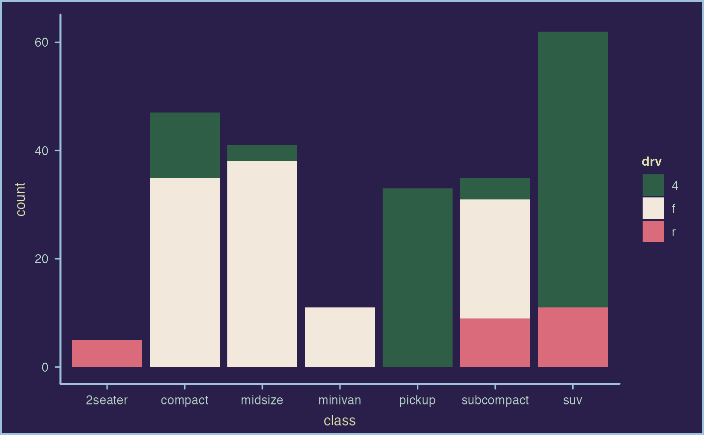
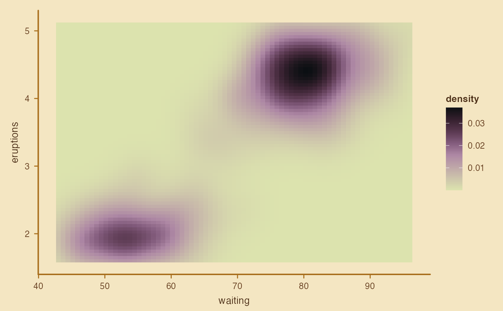

A complete ggplot2 theme that dresses a plot like one of Portinari's
canvases: a warm ground of raw linen, firm drawn contours instead of a boxed
panel, earth-colored lettering and an optional painted frame. Two further
moods follow his United Nations panels: the deep indigo of Guerra and the
golden light of Paz. Pair it with scale_color_portinari() and
scale_fill_portinari().
Arguments
- mood
The overall look.
"canvas"(default) is a raw-linen ground with umber ink and sienna contours;"guerra"is a dark indigo ground with pale citrine ink and light blue contours;"paz"is a golden cream ground with brown ink and deep ochre contours.- base_size
Base font size, in points.
- base_family
Base font family.
- grid
Which major grid lines to draw:
"y"(default),"x","xy"or"none".- frame
If
TRUE(default), draws a thin painted frame around the whole plot, like the edge of a stretched canvas.
Pairing palettes with a mood
The light moods share their ground with the lightest colors of several
palettes (the creams of cafe and paz, the light centers of the diverging
palettes, the pale ends of the sequential ones). That is natural for filled
areas such as heatmaps, where the center then reads as neutral, but those
colors fade when used for points or lines. The guerra mood uses the indigo
that starts guerra and guerra_azul, so pair it with other palettes, for
example paz or sofia: the ground of War with the colors of Peace.
Examples
library(ggplot2)
ggplot(mtcars, aes(wt, mpg, colour = factor(cyl))) +
geom_point(size = 3) +
scale_color_portinari("paz", name = "Cylinders") +
labs(title = "Fuel economy", subtitle = "Heavier cars travel less per gallon") +
theme_portinari()

ggplot(mpg, aes(class, fill = drv)) +
geom_bar() +
scale_fill_portinari("sofia") +
theme_portinari("guerra")

ggplot(faithfuld, aes(waiting, eruptions, fill = density)) +
geom_raster() +
scale_fill_portinari("roxa_terra", type = "continuous", direction = -1) +
theme_portinari("paz", grid = "none", frame = FALSE)
